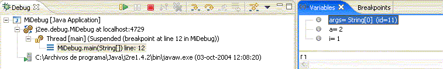

Depuración y gestión de logs
En esta sesión veremos cómo podemos depurar nuestro código al ejecutarlo, mediante el depurador incorporado en Eclipse. Para las aplicaciones donde no sea posible su auto-ejecución (por ejemplo, aplicaciones basadas en web), debemos recurrir a otras técnicas de depurado, como son la emisión de mensajes de estado (logs), que indiquen qué va haciendo el programa en cada momento. Para esto veremos cómo utilizar una librería llamada Log4Java, y las posibilidades que ofrece.
Depuración con Eclipse
En este apartado veremos cómo podemos depurar el código de nuestras aplicaciones desde el depurador que incorpora Eclipse, encontrando el origen de los errores que provoque nuestro programa. Este depurador incorpora muchas funcionalidades, como la ejecución paso a paso, establecimiento de breakpoints, consulta y establecimiento de valores de variables, parar y reanudar hilos de ejecución, etc. También podremos depurar aplicaciones que se estén ejecutando en máquinas remotas, e incluso utilizar el depurador a la hora de trabajar con otros lenguajes como C o C++ (instalando las C/C++ Development Tools (CDT)).
Eclipse proporciona una vista de depuración (debug view) que permite controlar el depurado y ejecución de programas. En él se muestra la pila de los procesos e hilos que tengamos ejecutando en cada momento.
Primeros pasos para depurar un proyecto
En primer lugar, debemos tener nuestro proyecto hecho y correctamente compilado. Por ejemplo:
Una vez hecho eso, vamos a Run - Debug, y creamos una nueva configuración de depuración, estableciendo la clase que debemos considerar como principal al depurar. Podremos tener tantas configuraciones de depuración sobre un proyecto como queramos (en el caso de que queramos probar varias clases principales).
Una vez configurada la depuración, cerramos el diálogo. Pulsando en Debug se ejecutará el programa, y pulsando Close lo dejaremos configurado sin más.
En algunas versiones de Eclipse, al depurar el código pasamos directamente a la perspectiva de depuración (Debug perspective), pero para cambiar manualmente, vamos a Window - Open perspective - Debug.
En la parte superior izquierda vemos los hilos que se ejecutan, y su estado. Arriba a la derecha vemos los breakpoints que establezcamos, y los valores de las variables que entran en juego. Después tenemos el código fuente, para poder establecer marcas y breakpoints en él, y debajo la ventana con la salida del proyecto.
Establecer breakpoints
Una de las operaciones más habituales a la hora de depurar es establecer breakpoints, puntos en los que la ejecución del programa se detiene para permitir al programador examinar cuál es el estado del mismo en ese momento.
Para establecer breakpoints, vamos en la ventana de código hasta la línea que queramos marcar, y hacemos doble click en el margen izquierdo:
El breakpoint se añadirá a la lista de breakpoints de la pestaña superior derecha. Una vez hecho esto, re-arrancamos el programa desde Run - Debug, seleccionando la configuración deseada y pulsando en Debug.

En la parte superior podemos ver el estado de las variables (pestaña Variables), y de los hilos de ejecución. Tras cada breakpoint, podemos reanudar el programa pulsando el botón de Resume (la flecha verde), en la parte superior.
Breakpoints condicionales
Podemos establecer también breakpoints condicionales, que se disparen únicamente cuando el valor de una determinada expresión o variable cambie. Para ello, pulsamos con el botón derecho sobre la marca del breakpoint en el código, y elegimos Breakpoint Properties. Allí veremos una casilla que indica Enable Condition. Basta con marcarla y poner la expresión que queremos verificar. Podremos hacer que se dispare el breakpoint cuando la condición sea cierta, o cuando el valor de esa condición cambie:
Evaluar expresiones
Podemos evaluar una expresión del código si, durante la depuración, seleccionamos la expresión a evaluar, y con el botón derecho elegimos Inspect. El valor nos lo muestra en un popup, pero podemos verlo en la vista de expresiones pulsando Control + Mayus + I.
Explorar variables
Como hemos dicho, en la parte superior derecha, en el cuadro Variables podemos ver el valor que tienen las variables en cada momento. Una vez que la depuración alcanza un breakpoint, podemos desde el menú Run ir a la opción Step Over (o pulsar F6), para ir ejecutando paso a paso a partir del breakpoint, y ver en cada paso qué variables cambian (se ponen en rojo), y qué valores toman.
También podemos, en el cuadro de variables, pulsar con el botón derecho sobre una, y elegir Change Value, para cambiar a mano su valor y ver cómo se comporta el programa.
Cambiar código "en caliente"
Si utilizamos Java 1.4, desde el depurador de Eclipse podemos, durante la depuración, cambiar el código de nuestra aplicación y seguir depurando. Basta con modificar el código durante una parada por un breakpoint o algo similar, y después pulsar en Resume para seguir ejecutando.
Esto se debe a que Java 1.4 es compatible con la JPDA (Java Platform Debugger Architecture), que permite modificar código en una aplicación en ejecución. Esto es útil cuando es muy pesado re-arrancar la aplicación, o llegar al punto donde falla.
Gestión de logs con Log4Java
Log4Java (log4j) es una librería open source que permite a los desarrolladores de software controlar la salida de los mensajes que generen sus aplicaciones, y hacia dónde direccionarlos, con una cierta granularidad. Es configurable en tiempo de ejecución, lo que permite establecer el tipo de mensajes que queremos mostrar y dónde mostrarlos, sin tener que detener ni recompilar nuestra aplicación.
Para encontrar más información acerca de Log4J, así como últimas versiones que vayan saliendo, consultad la página del proyecto Jakarta: http://jakarta.apache.org/log4j/.
Estructura de Log4J
El funcionamiento de Log4J se basa en 3 elementos básicos: loggers, appenders y layouts.
Los loggers son entidades asociadas a nombres (de paquetes o clases), que recogen los mensajes de log que emiten dichos paquetes o clases. Se dice que un logger es un antecesor de otro si su nombre, seguido de un punto, es un prefijo del nombre del otro log. Un logger es el padre de otro, si es su antecesor más cercano. Por ejemplo: el logger com.foo es padre del logger com.foo.Bar, y antecesor de com.foo.otroPaquete.UnaClase.
Existe siempre un logger raíz (root logger), a partir del cual se genera toda la jerarquía de nuestra aplicación.
Una vez controlado el mensaje de log, se debe mostrar por alguna parte. Ese dónde se envía el mensaje de log es lo que llamamos appender. Podremos tener como appenders la propia pantalla, un fichero de texto, o una base de datos, entre otros, como veremos a continuación.
Finalmente, podemos dar un formato a los mensajes de log, para que se muestren con la apariencia que queramos. Por ejemplo, mostrar la fecha actual, tipo de mensaje, y texto del mensaje. Todo esto se consigue definiendo el correspondiente layout de los logs.
Veremos cada uno de estos elementos con más detalle a continuación.
Niveles de log (loggers)
Una ventaja que debe tener una librería de logging sobre los tradicionales System.out.println o printf que nos ayudaban a ver por dónde iba el programa y qué pasaba, es que deben permitir omitir estos mensajes de forma cómoda, cuando no necesitemos que se muestren, sin tener que quitarlos a mano del código y recompilar la aplicación.
Los mensajes de log que maneja log4j se categorizan en 5 niveles de prioridad:
- DEBUG: para mensajes de depuración, mientras se está desarrollando la aplicación, para ver cómo se comporta.
- INFO: para mensajes que muestren información del programa durante su ejecución (por ejemplo, versión que se esté ejecutando, inicios o fines de procesos que se lancen, etc)
- WARN: para mensajes de alerta sobre situaciones anómalas que se produzcan, pero que no afecten el funcionamiento correcto del programa.
- ERROR: para guardar constancia de errores del programa que, aunque le permitan seguir funcionando, afecten al funcionamiento del mismo. Por ejemplo, que un parámetro de configuración tenga un valor incorrecto, o que no se encuentre un fichero no crítico.
- FATAL: se utiliza para mensajes críticos, por errores que hacen que el programa generalmente aborte su ejecución.
Se podrá habilitar que se muestren los mensajes pertenecientes a ciertas categorías de las anteriores, en cualquier momento, según la información que nos interese mantener.
Para mostrar mensajes de log en una clase, debemos crear un objeto de tipo org.apache.log4j.Logger, asignándole el nombre asociado (normalmente nos basamos en el nombre de la clase que lo usa), y luego tenemos en ella métodos para generar mensajes de cada uno de los 5 niveles:
debug (String mensaje) info (String mensaje) warn (String mensaje) error (String mensaje) fatal (String mensaje)
Por ejemplo:
import org.apache.log4j.*;
public class MiClase
{
static Logger logger = Logger.getLogger(MiClase.class);
...
public static void main(String[] args)
{
logger.info("Entrando en la aplicacion");
...
logger.warn("Esto es una advertencia");
...
logger.fatal("Error fatal");
}
}
Además, existen dos niveles extras que sólo se utilizan en el fichero de configuración:
- ALL: el nivel más bajo posible, habilita todos los niveles anteriores
- OFF: el nivel más alto, deshabilita todos los niveles anteriores.
Veremos más adelante cómo configurar la habilitación o deshabilitación de los niveles que interesen.
Salidas de log (appenders)
Además, log4j permite que un nivel de log se muestre por una o varias salidas establecidas. Cada una de las salidas por las que puede mostrarse un log se llama appender. Algunos de los disponibles (cuyas clases están en el paquete org.apache.log4j) son:
-
ConsoleAppender: muestra el log en la pantalla. Tiene 3 opciones configurables:
- Threshold=WARN: indica que no muestre ningún mensaje con nivel menor que el indicado
- ImmediateFlush=true: si está a true, indica que los mensajes no se almacenan en un buffer, sino que se envían directamente al destino
- Target=System.err: por defecto envía los mensajes a System.out. Establece la salida a utilizar
-
FileAppender: vuelca el log a un fichero. Tiene 4 opciones configurables:
- Threshold=WARN: sirve para lo mismo que en ConsoleAppender
- ImmediateFlush=true: sirve para lo mismo que en ConsoleAppender
- File=logs.txt: nombre del archivo donde guardar los logs
- Append=false: a true indica que los nuevos mensajes se añadan al final del fichero, y a false, cuando se reinicie la aplicación el archivo se sobreescribirá.
-
RollingFileAppender: como FileAppender, pero permite definir políticas de rotación en los ficheros, para que no crezcan indefinidamente. Tiene 6 opciones configurables:
- Threshold=WARN: sirve para lo mismo que en ConsoleAppender
- ImmediateFlush=true: sirve para lo mismo que en ConsoleAppender
- File=logs.txt: sirve para lo mismo que en FileAppender
- Append=false: sirve para lo mismo que en FileAppender
- MaxFileSize=100KB: los sufijos pueden ser KB, MB o GB. Rota el archivo de log (copia su contenido en otro fichero auxiliar para vaciarse) cuando el log alcanza el tamaño indicado.
- MaxBackupIndex=2: mantiene los archivos de respaldo auxiliares que se indiquen como máximo. Los archivos de respaldo sirven para no borrar los logs antiguos cuando lleguen nuevos, sino guardarlos en otros ficheros mientras quepan. Sin esta opción, el número de archivos de respaldo sería ilimitado.
NOTA: existe una variante de este appender, que es DailyRollingFileAppender, que permite definir políticas de rotación basadas en fechas (políticas diarias, semanales, mensuales... etc).
-
JDBCAppender: redirecciona los mensajes hacia una base de datos. Se espera que este appender sea modificado en un futuro. Sus opciones son:
- Threshold=WARN: sirve para lo mismo que en ConsoleAppender
- ImmediateFlush=true: sirve para lo mismo que en ConsoleAppender
- Driver=mm.mysql.Driver: define el driver de conexión por JDBC
- URL=jdbc:mysql://localhost/LOG4JDemo:indica la URL de la base de datos en el servidor de base de datos
- user=default: login del usuario
- password=default: password del usuario
- sql=INSERT INTO Logs(mensaje) VALUES ('%d - %c - %p - %m'): sentencia SQL que se utiliza para dar de alta el mensaje en la BD.
-
Otros appenders:
- SocketAppender: redirecciona los mensajes hacia un servidor remoto
- SMTPAppender: envía un email con los mensajes de log
- SyslogAppender: redirecciona los mensajes hacia el demonio syslog de Unix
- ... etc.
Los appenders se establecen en la configuración que se proporcione, que se verá más adelante.
Formato del log (layout)
Los layouts son los responsables de dar formato de salida a los mensajes de log, de acuerdo a las especificaciones que indique el desarrollador de software. Algunos de los tipos disponibles son:
-
SimpleLayout: consiste en la prioridad del mensaje, seguida de un guión, y el mensaje:
DEBUG - Hola, esto es una prueba
-
PatternLayout: establece el formato de salida del mensaje de acuerdo a unos patrones similares al comando printf de C. Algunos de los patrones disponibles son:
- c: para desplegar la categoría del evento de log. Puede tener una precisión, dada entre llaves, que indique qué parte de la categoría mostrar. Por ejemplo: %c, %c{2}.
- C: para desplegar el nombre completo de la clase que generó el evento de log. También puede tener una precisión entre llaves. Por ejemplo, si la clase en cuestión es org.apache.MiClase, si ponemos %C mostrará "org.apache.MiClase", pero si ponemos %C{1} mostrará "MiClase".
- d: muestra la fecha en que se genera el evento de log. Entre llaves podemos indicar el formato de la misma. Por ejemplo: d{dd/MM/yyyy HH:mm:ss}
- L: muestra el número de línea donde se ha generado el evento de log
- m: muestra el mensaje del evento de log
- M: muestra el nombre del método que generó el evento de log
- n: genera un salto de línea en el formato
- p: muestra la prioridad del evento de log
- r: muestra los milisegundos desde que se inició la aplicación hasta que se produjo el error
- ... existen otros muchos modificadores que no se comentan aquí, por simplificar.
-
HTMLLayout: establece como salida de log una tabla HTML. Tiene como atributos:
- LocationInfo=true: a true muestra la clase Java y el número de línea donde se produjo el mensaje
- Title=Título de mi aplicación: indica el valor a incluir en el tag <title> de HTML
-
XMLLayout: la salida será un archivo XML, que cumple con la DTD log4j.dtd. Tiene como atributo:
- LocationInfo=true: a true muestra la clase Java y el número de línea donde se produjo el mensaje
- TTCCLayout: consiste en la fecha, hilo, categoría y NDC (Nested Diagnostic Context) del evento.
El formato de log también se establece en los ficheros de configuración, como se verá más adelante.
Configurar Log4J
Log4J permite configurarse mediante archivos, bien sean XML, o archivos de propiedades de java (donde cada línea tiene el aspecto clave=valor).
Vemos un ejemplo de cómo incluir logs en una aplicación. Los pasos a seguir son:
- Incluir los paquetes (org.apache.log4j.*)
- Definir una variable de tipo Logger con el nombre de la clase que queremos loggear
- Crear una configuración (por ejemplo, con BasicConfigurator.configure(...))
Configuración básica de Log4J
Veamos cómo sería la configuración más sencilla de Log4J con un ejemplo:
import org.apache.log4j.*;
public class MiClase
{
static Logger logger = Logger.getLogger(MiClase.class);
...
public static void main(String[] args)
{
BasicConfigurator.configure();
logger.info("Entrando en la aplicacion");
MiOtraClase mc = new MiOtraClase();
mc.hola();
logger.info("Finalizando aplicacion");
}
}
El log se configura en la clase principal de la aplicación (la que la arranca), y después todas las subclases ya parten de esa configuración para mostrar sus logs. Por ejemplo, en el caso anterior, si quisiéramos mostrar información de log desde la clase MiOtraClase, sólo tendríamos que declarar el Logger y mostrar los mensajes que queramos:
import org.apache.log4j.*;
public class MiOtraClase
{
static Logger logger = Logger.getLogger(MiOtraClase.class);
...
public MiOtraClase()
{
logger.info("Constructor de MiOtraClase");
...
}
public void hola()
{
...
}
}
En este caso se ha tomado una configuración por defecto, que es la que establece el método BasicConfigurator.configure(). Tenemos también opción de pasar como configuración de log un fichero de Properties (mediante un PropertyConfigurator), o un fichero XML (con un DomConfigurator), llamando a sus métodos configure() respectivos.
Configuración mediante ficheros de propiedades
Configuración mediante fichero de propiedades
Por ejemplo, si queremos pasarle a la clase MiClase un fichero de Properties para configurar el logging, haríamos algo como:
import org.apache.log4j.*;
public class MiClase
{
static Logger logger = Logger.getLogger(MiClase.class);
...
public static void main(String[] args)
{
PropertyConfigurator.configure(args[0]);
logger.info("Entrando en la aplicacion");
MiOtraClase mc = new MiOtraClase();
mc.hola();
logger.info("Finalizando aplicacion");
}
}
En este caso en el primer parámetro al ejecutar le pasaríamos el nombre del fichero de Properties. Adicionalmente, se tienen los métodos PropertyConfigurator.configureAndWatch(...) y DomConfigurator.configureAndWatch(...), que establecen la configuración, como configure(), pero revisan en tiempo de ejecución el fichero de configuración para aplicar los cambios que sobre él podamos hacer.
Un ejemplo de archivo de configuración es:
# Coloca el nivel root del logger en DEBUG (muestra mensajes de DEBUG hacia arriba) # Añade dos appenders, llamados A1 y A2 log4j.rootLogger=DEBUG, A1, A2 # A1 se redirige a la consola log4j.appender.A1=org.apache.log4j.ConsoleAppender # A1 utiliza PatternLayout log4j.appender.A1.layout=org.apache.log4j.PatternLayout log4j.appender.A1.layout.ConversionPattern=%r [%t] %-5p %c %x %m # A2 se redirige a un fichero log4j.appender.A2=org.apache.log4j.RollingFileAppender # A2 solo muestra mensajes de tipo WARN o superior, en el fichero logs.txt, hasta 1 MB log4j.appender.A2.Threshold=WARN log4j.appender.A2.File=logs.txt log4j.appender.A2.MaxFileSize=1MB # En el paquete mipaq.otropaq solo muestra mensajes de tipo WARN o superior log4j.logger.mipaq.otropaq=WARN
Si no indicamos ningún fichero de configuración (lo que ocurría antes con BasicConfigurator.configure(), por defecto Log4J buscará en el CLASSPATH un fichero que se llame log4j.properties y tomará la configuración de él (si lo encuentra, si no aplicará una configuración por defecto). Así que una alternativa es crearnos ese fichero con la configuración que queramos, en lugar de llamar a otro distinto.
Configuración mediante un fichero XML
Si queremos hacer la misma configuración anterior desde un fichero XML, haríamos algo como:
import org.apache.log4j.*;
public class MiClase
{
static Logger logger = Logger.getLogger(MiClase.class);
...
public static void main(String[] args)
{
DOMConfigurator.configure(args[0]);
logger.info("Entrando en la aplicacion");
MiOtraClase mc = new MiOtraClase();
mc.hola();
logger.info("Finalizando aplicacion");
}
}
y como parámetro le pasaríamos el fichero XML de configuración. Un ejemplo de archivo de configuración es:
<?xml version="1.0" encoding="UTF-8" ?>
<!DOCTYPE log4j:configuration SYSTEM "log4j.dtd">
<log4j:configuration>
<!-- Definimos appender A1 de tipo ConsoleAppender -->
<appender name="A1" class="org.apache.log4j.ConsoleAppender">
<layout class="org.apache.log4j.PatternLayout">
<param name="ConversionPattern" value="%r [%t] %-5p %c %x %m"/>
</layout>
</appender>
<!-- Definimos appender A2 de tipo FileAppender -->
<appender name="A1" class="org.apache.log4j.FileAppender">
<param name="File" value="logs.txt"/>
<param name="Threshold" value="warn"/>
<param name="MaxFileSize" value="1MB"/>
<layout class="org.apache.log4j.SimpleLayout">
</appender>
<!-- Configuramos el root logger -->
<root>
<priority value ="debug" />
<appender-ref ref="A1"/>
<appender-ref ref="A2"/>
</root>
</log4j:configuration>
La librería commons-logging
Aunque Log4J es una librería muy potente para logging, puede que no se adapte a nuestras necesidades, o a las de nuestra empresa. En ese caso, tenemos una alternativa más flexible: utilizar las librerías commons-logging de Jakarta: http://jakarta.apache.org/commons/logging/.
Esta librería no proporciona herramientas de logging propiamente dichas, sino una envoltura (wrapper) con la que colocar los mensajes de log en nuestras aplicaciones, y bajo la cual podemos poner la librería de logs que queramos, como puedan ser Log4Java, la librería de logging de Java (SimpleLog), u otras, configurando adecuadamente el puente entre el wrapper de commons-logging y nuestra librería de log.
Definir mensajes de logs en nuestras aplicaciones con commons-logging
Para colocar los mensajes de log en nuestros programas utilizando commons-logging, basta con tener cargada la librería JAR correspondiente (normalmente, el fichero commons-logging-1.1.jar o similar que venga en la distribución que nos descarguemos). Después, en cada clase sobre la que queramos generar logs, creamos un objeto de tipo org.apache.commons.logging.Log, como veremos en el siguiente ejemplo, y llamamos a sus métodos info(), debug(), error(), warn(), fatal(), como hacíamos con Log4J:
import org.apache.commons.logging.*;
public class ClaseAuxiliar
{
String mensaje = null;
static Log logger = LogFactory.getLog(ClaseAuxiliar.class);
public ClaseAuxiliar()
{
logger.info("Clase auxiliar inicializada");
}
public String mensaje()
{
if (mensaje == null)
{
logger.warn("Atencion, el mensaje es null");
return "";
}
return mensaje;
}
}
Enlazar con nuestra librería: Log4J
Ya tenemos colocados nuestros mensajes de log en la aplicación, pero... ¿cómo le decimos al programa que queremos utilizar Log4J, y un fichero de configuración de Log4J?
Simplemente tenemos que dejar en el CLASSPATH de nuestra aplicación dos ficheros de propiedades: Uno llamado commons-logging.properties, en cuyo contenido indicamos, con la siguiente línea, que vamos a utilizar Log4J como logger interno:
org.apache.commons.logging.Log=org.apache.commons.logging.impl.Log4JLogger
El segundo fichero debe llamarse log4j.properties, que contendrá la configuración que le queremos dar a Log4Java, como hemos visto antes. Un ejemplo de este fichero sería:
# Coloca el nivel root del logger en DEBUG (muestra mensajes de DEBUG hacia arriba)
# Añade appender A1
log4j.rootLogger=DEBUG, A1
# A1 se redirige a la consola
log4j.appender.A1=org.apache.log4j.ConsoleAppender
log4j.appender.A1.Threshold=INFO
# A1 utiliza PatternLayout
log4j.appender.A1.layout=org.apache.log4j.PatternLayout
log4j.appender.A1.layout.ConversionPattern=%d{dd/MM/yyyy HH:mm:ss} - %p - %m %n
Recordemos que Log4J, si no se especifica ningún fichero de configuración, buscará el fichero log4j.properties en el CLASSPATH, por eso tenemos que llamarlo así.
Enlazar con otras librerías
Si en lugar de trabajar con Log4J queremos trabajar con otras librerías, tendremos que consultar la documentación de commons-logging para ver cómo se hace. Por ejemplo, podemos utilizar la librería de logging que viene con JDK. Para eso, simplemente necesitamos, como antes, dos ficheros de propiedades en el classpath: uno llamado commons-logging.properties, como antes, en cuyo contenido indicamos, con la siguiente línea, que vamos a utilizar la librería de JDK como logger interno:
org.apache.commons.logging.Log=org.apache.commons.logging.impl.SimpleLog
El segundo fichero debe llamarse simplelog.properties, y contendrá la configuración específica para este tipo de loggers. Un ejemplo sencillo de fichero sería:
# Nivel de log general
# ("trace", "debug", "info", "warn", "error", o "fatal"). Por defecto es "info"
org.apache.commons.logging.simplelog.defaultlog=warn
# A true si queremos que el nombre del Log aparezca en cada mensaje en la salida
org.apache.commons.logging.simplelog.showlogname=false
# A true si queremos que el nombre corto del Log (su último término) aparezca en cada mensaje en la salida
org.apache.commons.logging.simplelog.showShortLogname=true
# A true si queremos poner fecha y hora actuales en cada mensaje en la salida
org.apache.commons.logging.simplelog.showdatetime=true
Conclusiones
Observad que la principal ventaja de utilizar commons-logging es que, una vez colocados los mensajes de log en nuestra aplicación, ya no tenemos que tocar nada del código fuente para configurarla, ni para cambiar de librería de log si queremos. Basta con colocar en el CLASSPATH los ficheros de propiedades correspondientes, y reajustar en ellos la configuración de logging que deseamos.